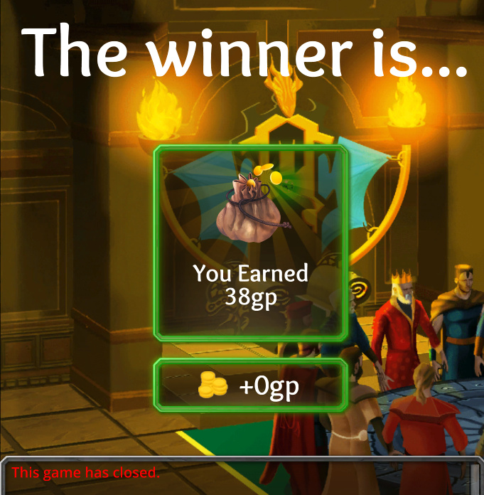
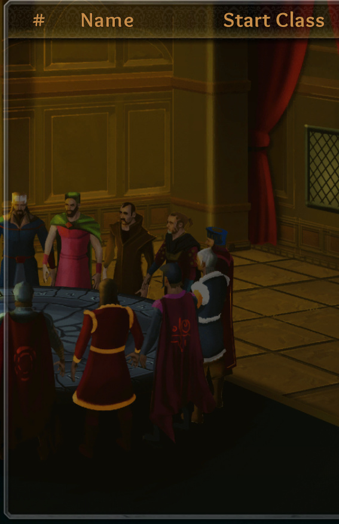

What happened?
At the end of the game, I got immediately sent to the end screen, and got rewarded 38 gold, and a chat message at the bottom said simply the game was closed. This skipped the part where I would be able to MVP people, and it didn’t show any of the participants, so I could not report anyone.


What was SUPPOSED to happen?
The game was supposed to end normally, with BD having won, and I was supposed to be given a chance to mvp people before being given the gold for winning, and then I should have gotten to a screen showing who all the players were and who the three MVPs were. As this was a double gold weekend, I should have gotten 150 gold, not 38.
Steps to reproduce:
Win the game as mystic against unseen and reaper while playing as mystic and surviving until the end.
Comments:
This is the second time this has happened to me. It does not happen most games, and I don’t know exactly what the conditions are for this happening. I never encountered this problem before the recent king rework.